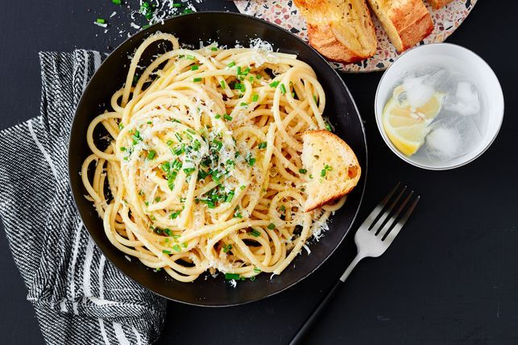

Cheese and Pepper Pasta

Description
Enjoy this easy and cheesy vegeterian pasta
Ingredients
- 375g dried tubular spaghetti
- 75g butter, chopped
- 3 garlic cloves, crushed
- 3 tsp coarsely ground black pepper (see note)
- 1 cup finely grated parmesan
- 1/2 cup finely grated pecorino
- 1/4 cup finely chopped fresh chives
- Garlic bread, to serve
Steps
- Cook pasta in a large saucepan of boiling, salted water,
following packet directions. Drain pasta, reserving 1 cup cooking liquid.
- Melt butter in a large frying pan over medium-high heat. Add garlic
and pepper. Cook, stirring, for 1 minute or until fragrant.
Stir in reserved pasta water. Add parmesan and pecorino. Whisk to form
a thin sauce. Add pasta. Toss to coat.
- Sprinkle with chives. Serve with garlic bread.